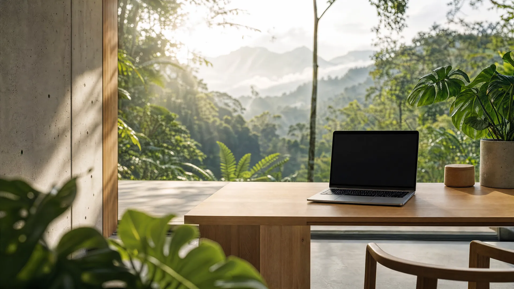
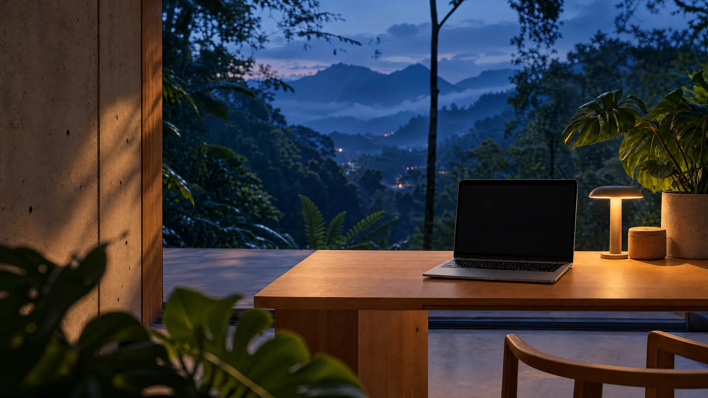

Schritt 1 von 3
Ihre Anfrage
Antwort innerhalb von 24 Stunden online
ERGUN. baut Websites, Automatisierung und KI kommen über endo · ergun.eu@gmail.com
Digitalstudio für Unternehmen


Digitalstudio für Unternehmen
So arbeitet Ihr System
Ihre Website entsteht
Eine Anfrage kommt
Automatisch erledigt
Alles greift ineinander
Websites mit Design und Bewegung, persönlich geplant und gebaut – Automatisierung und eigene KI für Ihren Betrieb über endo.
Schritt 1 von 3
Antwort innerhalb von 24 Stunden online
ERGUN. baut Websites, Automatisierung und KI kommen über endo · ergun.eu@gmail.com